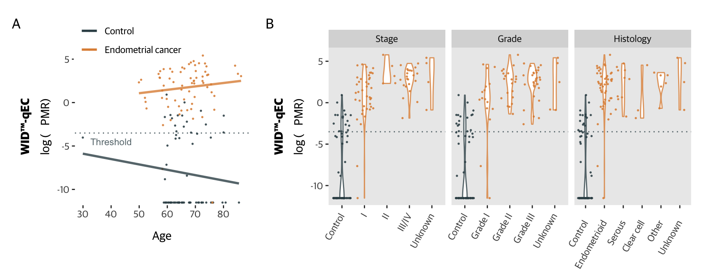
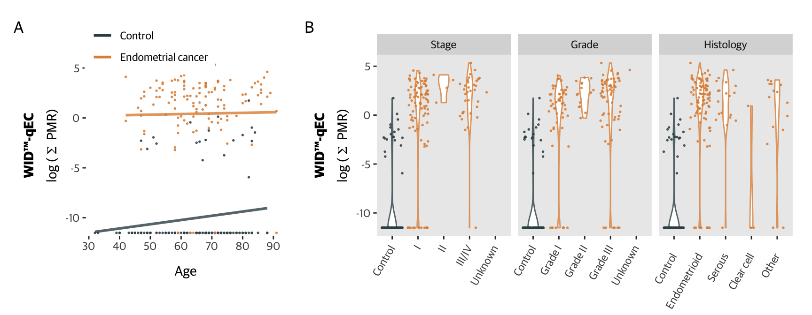

tmp <- mldat %>%
filter(set == "FORECEE Validation") %>%
mutate(grade = as.character(grade),
stage = as.character(stage),
hist = as.character(hist)) %>%
mutate(grade = ifelse(type == "Control", "Control", grade)) %>%
mutate(stage = ifelse(type == "Control", "Control", stage)) %>%
mutate(hist = ifelse(type == "Control", "Control",
ifelse(hist == "Other *", "Other", hist))) %>%
mutate(grade = factor(grade, levels = c("Control", "Grade I", "Grade II", "Grade III", "Unknown"))) %>%
mutate(hist = factor(hist, levels = c("Control", "Endometrioid", "Serous", "Clear cell", "Other", "Unknown"))) %>%
mutate(stage = factor(stage, levels = c("Control", "I", "II", "III/IV", "Unknown")))
p1 <- tmp %>%
ggplot(aes(x = age,
y = log(sum + 0.00001),
colour = type)) +
geom_point(size = 0.3) +
geom_smooth(method = "lm",
se = FALSE) +
ylab(expression(paste(atop(bold("WID™-qEC"), "log ("~Sigma~" PMR)")))) +
theme(panel.background = element_blank(),
legend.position = c(0.32, 1.1),
legend.key = element_blank()) +
scale_colour_manual(values = cols[c(1,2)],
name = "") +
xlab("Age") +
coord_cartesian(ylim = c(-11, 5.5),
clip = "off")
tmp <- tmp %>%
pivot_longer(c(stage, grade, hist), names_to = "types", values_to = "factors") %>%
mutate(factors = factor(factors, levels = c("Control",
"I", "II", "III/IV",
"Grade I", "Grade II", "Grade III",
"Endometrioid", "Serous", "Clear cell", "Other",
"Unknown")))
labs <- c("Stage", "Grade", "Histology")
names(labs) <- c("stage", "grade", "hist")
p2 <- tmp %>%
mutate(types = factor(types, levels = c("stage", "grade", "hist"))) %>%
ggplot(aes(x = factors,
y = log(sum + 0.00001))) +
geom_violin(width = 0.4,
aes(colour = type)) +
geom_jitter(size = 0.3,
aes(colour = type)) +
ylab(expression(paste(atop(bold("WID™-qEC"), "log ("~Sigma~" PMR)")))) +
xlab("") +
scale_colour_manual(values = cols[c(1,2)],
name = "") +
facet_wrap(~types,
scales = "free_x",
labeller = labeller(types = labs)) +
theme(panel.grid = element_blank(),
legend.position = "none",
axis.text.x = element_text(angle = 60,
hjust = 1,
margin = margin(-12, 0, 0, 0)),
legend.key = element_blank(),
legend.text = element_blank(),
legend.background = element_blank(),
plot.margin = margin(10, 10, 20, 10))
plot <- (p1 + p2) +
plot_layout(widths = c(1.2, 2.5)) +
plot_annotation(tag_levels = "A") &
theme(axis.title.x = element_text(margin = margin(t=-20)))
plot
tmp <- mldat %>%
filter(set == "Barcelona Validation") %>%
mutate(grade = as.character(grade),
stage = as.character(stage),
hist = as.character(hist)) %>%
mutate(grade = ifelse(type == "Control", "Control", grade)) %>%
mutate(stage = ifelse(type == "Control", "Control", stage)) %>%
mutate(hist = ifelse(type == "Control", "Control",
ifelse(hist == "Other *", "Other",
hist))) %>%
mutate(grade = factor(grade, levels = c("Control", "Grade I", "Grade II", "Grade III", "Unknown"))) %>%
mutate(hist = factor(hist, levels = c("Control", "Endometrioid", "Serous", "Clear cell", "Other", "Unknown"))) %>%
mutate(stage = factor(stage, levels = c("Control", "I", "II", "III/IV", "Unknown")))
p1 <- tmp %>%
ggplot(aes(x = age,
y = log(sum + 0.00001),
colour = type)) +
geom_point(size = 0.3) +
geom_smooth(method = "lm",
se = FALSE) +
ylab(expression(paste(atop(bold("WID™-qEC"), "log ("~Sigma~" PMR)")))) +
theme(panel.background = element_blank(),
legend.position = c(0.32, 1.1),
legend.key = element_blank()) +
scale_colour_manual(values = cols[c(1,2)],
name = "") +
xlab("Age") +
coord_cartesian(ylim = c(-11, 5.5),
clip = "off")
tmp <- tmp %>%
pivot_longer(c(stage, grade, hist), names_to = "types", values_to = "factors") %>%
mutate(factors = factor(factors, levels = c("Control",
"I", "II", "III/IV",
"Grade I", "Grade II", "Grade III",
"Endometrioid", "Serous", "Clear cell", "Other",
"Unknown")))
labs <- c("Stage", "Grade", "Histology")
names(labs) <- c("stage", "grade", "hist")
p2 <- tmp %>%
mutate(types = factor(types, levels = c("stage", "grade", "hist"))) %>%
ggplot(aes(x = factors,
y = log(sum + 0.00001))) +
geom_violin(width = 0.4,
aes(colour = type)) +
geom_jitter(size = 0.3,
aes(colour = type)) +
ylab(expression(paste(atop(bold("WID™-qEC"), "log ("~Sigma~" PMR)")))) +
xlab("") +
scale_colour_manual(values = cols[c(1,2)],
name = "") +
facet_wrap(~types,
scales = "free_x",
labeller = labeller(types = labs)) +
theme(panel.grid = element_blank(),
legend.position = "none",
axis.text.x = element_text(angle = 60,
hjust = 1,
margin = margin(-12, 0, 0, 0)),
legend.key = element_blank(),
legend.text = element_blank(),
legend.background = element_blank(),
plot.margin = margin(10, 10, 20, 10))
plot <- (p1 + p2) +
plot_layout(widths = c(1.2, 2.5)) +
plot_annotation(tag_levels = "A") &
theme(axis.title.x = element_text(margin = margin(t=-20)))
plot
mldat_tmp <- mldat %>%
filter(set == "FORECEE Validation" & ethnicity != "Unknown") %>%
mutate(ethnicity = factor(ethnicity, levels = c("White", "Non-white"))) %>%
droplevels() %>%
mutate(sum = `ZSCAN12\n(cg25060829 [ii])` + `GYPC\n(cg15768103 [ii])` + `GYPC\n(cg15975865 [i])`) %>%
mutate(thresh1 = case_when(sum >= cut$threshold[1] ~ "Endometrial cancer",
sum < cut$threshold[1] ~ "Control")) %>%
mutate(thresh2 = case_when(sum >= cut$threshold[2] ~ "Endometrial cancer",
sum < cut$threshold[2] ~ "Control")) %>%
mutate(type = factor(type, levels = c("Endometrial cancer", "Control"))) %>%
mutate(thresh1 = factor(thresh1, levels = c("Endometrial cancer", "Control"))) %>%
mutate(thresh2 = factor(thresh2, levels = c("Endometrial cancer", "Control")))
# create df
dat <- data.frame(matrix(nrow = 9, ncol = length(unique(mldat_tmp$ethnicity))+2))
colnames(dat) <- c(levels(mldat_tmp$ethnicity), "threshold", "type")
dat$threshold <- c("", rep("Threshold 1", 4), rep("Threshold 2", 4))
dat$type <- c( "n (controls, cases)", rep(c("Sensitivity – % (95% CI)", "Specificity – % (95% CI)", "PPV – % (95% CI) †", "NPV – % (95% CI) †"), 2))
for(i in 1:length(levels(mldat_tmp$ethnicity))){
name <- levels(mldat_tmp$ethnicity)[i]
tmp <- mldat_tmp %>%
filter(ethnicity == name)
pop_prev <- 0.09
tab <- table(tmp$thresh1, tmp$type)
rval <- summary(epi.tests(tab))
tab <- matrix(c(tab[1,1], tab[2,1], tab[1,2], tab[2,2]), ncol = 2)
colnames(tab) <- c("Case", "Control")
rownames(tab) <- c("Case", "Control")
rval2 <- BDtest(xmat=as.matrix(tab), pr=pop_prev, conf.level = 0.95)
dat[1,i] <- paste0(sum(tmp$type=="Control"), ", ",
sum(tmp$type == "Endometrial cancer"))
dat[2,i] <- paste0(round(rval[3,1],2)*100, " (",
round(rval[3,2],2)*100, "–",
round(rval[3,3],2)*100, ")")
dat[3,i] <- paste0(round(rval[4,1],2)*100, " (",
round(rval[4,2],2)*100, "–",
round(rval[4,3],2)*100, ")")
dat[4,i] <- paste0(round(rval2$PPVNPVDAT[2,1],2)*100, " (",
round(rval2$PPVNPVDAT[2,2],2)*100, "–",
round(rval2$PPVNPVDAT[2,4],2)*100, ")")
dat[5,i] <- paste0(round(rval2$PPVNPVDAT[1,1],2)*100, " (",
round(rval2$PPVNPVDAT[1,2],2)*100, "–",
round(rval2$PPVNPVDAT[1,4],2)*100, ")")
tab <- table(tmp$thresh2, tmp$type)
rval <- summary(epi.tests(tab))
tab <- matrix(c(tab[1,1], tab[2,1], tab[1,2], tab[2,2]), ncol = 2)
colnames(tab) <- c("Case", "Control")
rownames(tab) <- c("Case", "Control")
rval2 <- BDtest(xmat=as.matrix(tab), pr=pop_prev, conf.level = 0.95)
dat[6,i] <- paste0(round(rval[3,1],2)*100, " (",
round(rval[3,2],2)*100, "–",
round(rval[3,3],2)*100, ")")
dat[7,i] <- paste0(round(rval[4,1],2)*100, " (",
round(rval[4,2],2)*100, "–",
round(rval[4,3],2)*100, ")")
dat[8,i] <- paste0(round(rval2$PPVNPVDAT[2,1],2)*100," (",
round(rval2$PPVNPVDAT[2,2],2)*100, "–",
round(rval2$PPVNPVDAT[2,4],2)*100, ")")
dat[9,i] <- paste0(round(rval2$PPVNPVDAT[1,1],2)*100, " (",
round(rval2$PPVNPVDAT[1,2],2)*100, "–",
round(rval2$PPVNPVDAT[1,4],2)*100, ")")
}
tbl <- dat %>%
gt(rowname_col = "type", groupname_col = "threshold") %>%
cols_label(
White = "White ethnicity",
`Non-white` = "Non-white ethnicity"
) %>%
tab_options(table.font.names = "Guardian Sans",
column_labels.font.weight = "bold",
row_group.font.weight = "bold",
data_row.padding = 2,
column_labels.font.size = 12,
table.font.size = 10,
row_group.padding = 2,
row_group.border.right.width = px(10),
summary_row.padding = 2,
table.border.top.color = "white",
row_group.border.top.width = px(1),
table.width = px(500),
row_group.border.bottom.width = px(1),
stub.border.width = px(0),
heading.title.font.size = 14) %>%
gt::tab_source_note(gt::md("**PPV** denotes positive predictive value, **NPV** negative predictive value.<br>† Assumed population prevalence: 9%"))
tbl| White ethnicity | Non-white ethnicity | |
|---|---|---|
| n (controls, cases) | 60, 65 | 5, 6 |
| Threshold 1 | ||
| Sensitivity – % (95% CI) | 97 (89–100) | 100 (54–100) |
| Specificity – % (95% CI) | 75 (62–85) | 80 (28–99) |
| PPV – % (95% CI) † | 28 (21–37) | 21 (10–39) |
| NPV – % (95% CI) † | 100 (99–100) | 98 (92–99) |
| Threshold 2 | ||
| Sensitivity – % (95% CI) | 83 (72–91) | 67 (22–96) |
| Specificity – % (95% CI) | 97 (88–100) | 100 (48–100) |
| PPV – % (95% CI) † | 71 (44–91) | 26 (8–51) |
| NPV – % (95% CI) † | 98 (97–99) | 96 (91–98) |
| PPV denotes positive predictive value, NPV negative predictive value. † Assumed population prevalence: 9% |
||